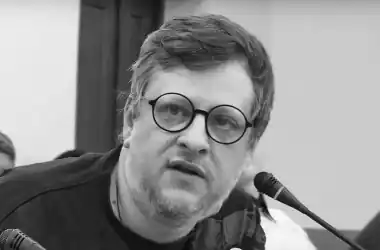

Олександр Мірошниченко (псевдонім Олександр Вітер) — актор, режисер, драматург.
Народився 26 лютого 1972 року у Києві. Закінчив естрадно-циркове училище (актор розмовного жанру) і КНУТКІТ імені І.Карпенка-Карого (режисер).
Працював у Центрі сучасної експериментальної драматургії А.Дяченка, театрі "Бенефіс", Національному театрі імені І. Франка, театральній майстерні "Сузір'я", Київському Камерному театрі, Національний Центр театрального мистецтва імені Леся Курбаса, Муніципальному театрі "Київ", а також здійснював постановки у Луганську, Одесі, Москві (Росія), Штіпі (Македонія). Є співавтором сценарію і режисером фільму "Сентиментальне полювання за тінню" (студія "Grok", Київ, премія за кращу жіночу роль на кінофестивалі в Мінську). Також — один із сценаристів 10-серійного серіалу "Заручники землі і неба" (Україна-Ірак). Виконував ролі у кіно і телефільмах, театральних і радіопостановках. Був сценаристом і постановником концертів, вуличних дійств. Працював головним режисером радіоканалу "Культура". Засновник всеукраїнського конкурсу радіоп'єс. Один із засновників театру "МІСТ". Здійснив понад 30 вистав. Викладав у Києво-Могилянському колегіумі, НАКККІМ, театральній школі "МІСТ", здійснював майстер-класи з режисури, драматургії, акторської майстерності, риторики. Автор віршів, сценаріїв, інсценізацій, п'єс. Твори публікувалися в журналі "Дніпро", альманасі "Сучасна українська драматургія", антологіях "Потойбіч паузи", "13 сучасних українських п'єс", журналах "Сучасна драма" (Вірменія) і "Діалог" (Польща), альманасі "Меркуріан" (США), антології новітньої української драми в Македонії. Його п'єси перекладалися російською, польською, сербською, македонською, вірменською, англійською, французькою мовами. Сценічні читання п'єс здійснювалися в Любліні (Польща), Парижі (Франція), Чикаго (США), Белграді (Сербія). Його постановки за творами здійснювалися в Україні (Київ, Львів, Харків, Дніпропетровськ та інші), а також у РФ, Грузії, Словаччині, Польщі.